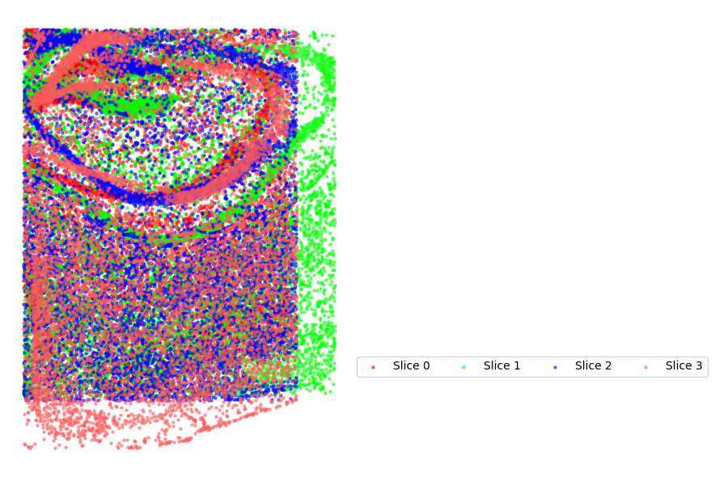
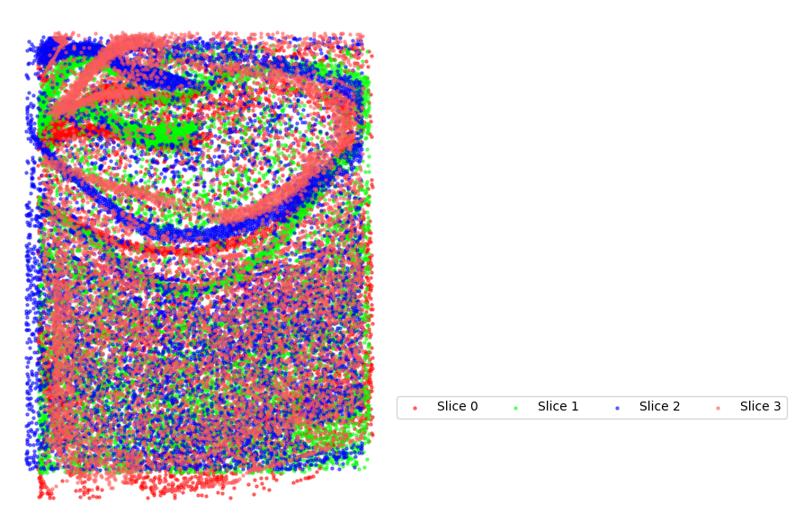
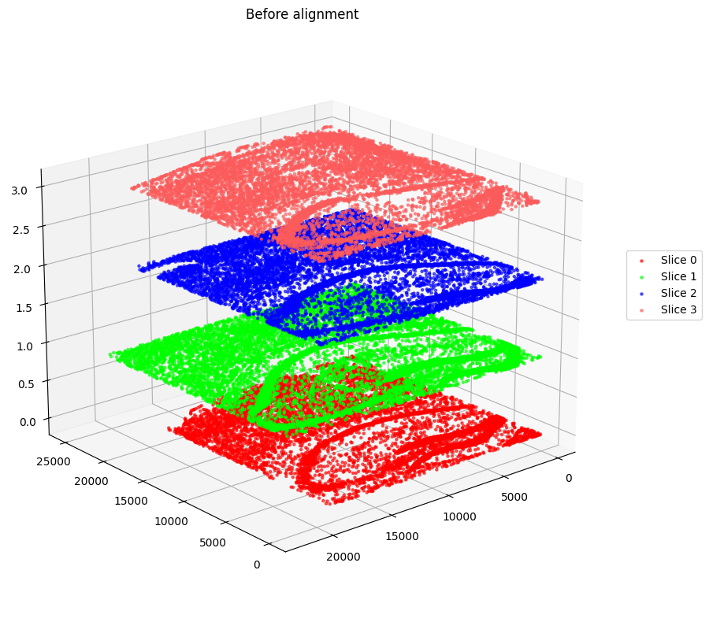
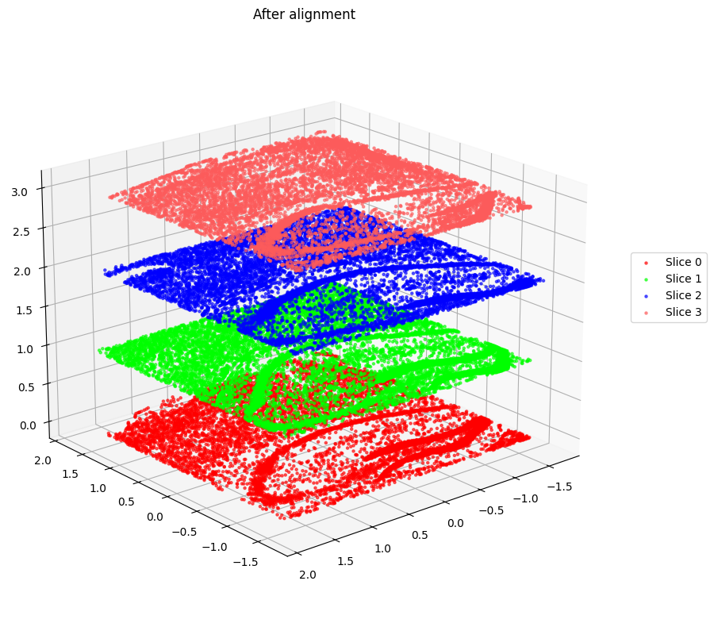

Tutorial 3: Aligning different states and time periods of Alzheimer’s disease mice data
This tutorial demonstrates SpaTemporal’s ability to align slices of Alzheimer’s mice in different states and at different stages.
Preparation
[1]:
import os
import torch
import time
import subprocess
import numpy as np
import pandas as pd
import scanpy as sc
import matplotlib.pyplot as plt
import seaborn as sns
import warnings
warnings.filterwarnings('ignore')
from pathlib import Path
from tqdm import tqdm
from sklearn.preprocessing import StandardScaler
Load Data
[2]:
data_root = Path('../../Data/Alzheimer/processed')
proj_list = [
'8months-control-replicate_1', '8months-disease-replicate_2', '13months-control-replicate_1', '13months-disease-replicate_1',
]
[3]:
# for proj_name in tqdm(proj_list):
# adata_tmp = sc.read_h5ad(os.path.join(data_root, proj_name + '.h5ad'))
# adata_tmp.var_names_make_unique()
# adata_tmp.obs['timepoint'] = proj_name
# #graph_dict_tmp = SEDR.graph_construction(adata_tmp, 12)
# ##### Load layer_guess label, if have
# # df_label = pd.read_csv(data_root / proj_name / 'manual_annotations.txt', sep='\t', header=None, index_col=0)
# # df_label.columns = ['layer_guess']
# # adata_tmp.obs['layer_guess'] = df_label['layer_guess']
# if proj_name == proj_list[0]:
# adata = adata_tmp
# #graph_dict = graph_dict_tmp
# name = proj_name
# adata.obs['timepoint'] = proj_name
# else:
# var_names = adata.var_names.intersection(adata_tmp.var_names)
# adata = adata[:, var_names]
# adata_tmp = adata_tmp[:, var_names]
# adata_tmp.obs['timepoint'] = proj_name
# adata = adata.concatenate(adata_tmp)
# #graph_dict = SEDR.combine_graph_dict(graph_dict, graph_dict_tmp)
# name = name + '_' + proj_name
[4]:
for proj_name in tqdm(proj_list):
adata_tmp = sc.read_h5ad(os.path.join(data_root, proj_name + '.h5ad'))
adata_tmp.var_names_make_unique()
adata_tmp.obs['timepoint'] = proj_name
#graph_dict_tmp = SEDR.graph_construction(adata_tmp, 12)
##### Load layer_guess label, if have
# df_label = pd.read_csv(data_root / proj_name / 'manual_annotations.txt', sep='\t', header=None, index_col=0)
# df_label.columns = ['layer_guess']
# adata_tmp.obs['layer_guess'] = df_label['layer_guess']
if proj_name == proj_list[0]:
adata = adata_tmp
#graph_dict = graph_dict_tmp
name = proj_name
adata.obs['timepoint'] = proj_name
else:
var_names = adata.var_names.intersection(adata_tmp.var_names)
adata = adata[:, var_names]
adata_tmp = adata_tmp[:, var_names]
adata_tmp.obs['timepoint'] = proj_name
adata = adata.concatenate(adata_tmp)
#graph_dict = SEDR.combine_graph_dict(graph_dict, graph_dict_tmp)
name = name + '_' + proj_name
100%|██████████| 4/4 [09:42<00:00, 145.74s/it]
Alignment
[5]:
def _obtain_tp_loc_info(adata):
'''
Obtain the location and time point information from the adata object.
The location is standardized and concatenated with the time point information.
The time point information is one-hot encoded.
'''
# in case the timepoint is not numeric
adata.obs['timepoint_numeric'] = adata.obs['timepoint'].astype('category').cat.codes
tp_info = np.array(adata.obs['timepoint_numeric']).astype('int')
tp_mat = np.zeros((tp_info.size, tp_info.max()+1))
tp_mat[np.arange(tp_info.size), tp_info] = 1
n_tp = tp_mat.shape[1]
# scale locations per time point
loc = adata.obsm['spatial']
loc_scaled = np.zeros(loc.shape, dtype=np.float64)
for i in range(n_tp):
scaler = StandardScaler()
tp_loc = loc[tp_mat[:,i]==1, :]
tp_loc = scaler.fit_transform(tp_loc)
loc_scaled[tp_mat[:,i]==1, :] = tp_loc
loc = loc_scaled
loc = np.concatenate((loc, tp_mat), axis=1)
return loc
[6]:
loc = _obtain_tp_loc_info(adata)
[7]:
adata.obsm["loc"] = loc
[9]:
from matplotlib import cm
import matplotlib
def plot_aligned_slices(adata_st_list, coor_key="loc", title="After alignment"):
# 创建颜色映射
# cmap = cm.get_cmap('rainbow', len(adata_st_list))
# colors_list = [matplotlib.colors.rgb2hex(cmap(i)) for i in range(len(adata_st_list))]
colors_list = ['#FF0000', '#00FF00', '#0000FF', "#FD5B5B", "#A6F7A6", "#8D8DFF"]
plt.figure(figsize=(9, 6))
#plt.title(title)
for i in range(len(adata.obs["timepoint_numeric"].unique())):
coords = adata[adata.obs["timepoint_numeric"]==i].obsm[coor_key]
plt.scatter(coords[:, 0], coords[:, 1],
c=colors_list[i],
label=f"Slice {i}",
s=5., alpha=0.5)
ax = plt.gca()
ax.set_ylim(ax.get_ylim()[::-1]) # 翻转Y轴，保持与Visium坐标一致
ax.set_xticks([]) # 去掉X轴刻度
ax.set_yticks([]) # 去掉Y轴刻度
for spine in ax.spines.values():
spine.set_visible(False) # 隐藏四周的边框线
plt.legend(loc=(1.02, 0.2), ncol=(len(adata_st_list)//13 + 1))
plt.tight_layout()
#plt.savefig(f'Aligned_slices2D_{coor_key}.png', dpi=300, bbox_inches='tight')
plt.show()
[10]:
plot_aligned_slices(adata_tmp, coor_key="spatial", title="Before alignment")

[13]:
plot_aligned_slices(adata_tmp, coor_key="loc", title="After alignment")

[17]:
import matplotlib.pyplot as plt
from mpl_toolkits.mplot3d import Axes3D # 必须导入 3D 绘图工具
def plot_aligned_slices_3d(adata, coor_key="loc", title="After alignment (3D View)"):
# 颜色列表
colors_list = ['#FF0000', '#00FF00', '#0000FF', "#FD5B5B", "#A6F7A6", "#8D8DFF"]
fig = plt.figure(figsize=(10, 8))
# 关键点：指定为 3d 投影
ax = fig.add_subplot(111, projection='3d')
ax.set_title(title)
# 获取唯一的时间点索引
unique_tp = sorted(adata.obs["timepoint_numeric"].unique())
for i in unique_tp:
# 筛选当前切片的数据
mask = adata.obs["timepoint_numeric"] == i
coords = adata.obsm[coor_key][mask]
# 提取 X, Y
x = coords[:, 0]
y = coords[:, 1]
# 设置 Z 为当前切片的索引（或者是真实的时间阶段）
z = np.full_like(x, i)
ax.scatter(x, y, z,
c=colors_list[i % len(colors_list)],
label=f"Slice {i}",
s=5., alpha=0.6)
# 3D 设置
# ax.set_xlabel('')
# ax.set_ylabel('')
# ax.set_zlabel('')
# ax.set_xticklabels([])
# ax.set_yticklabels([])
# ax.set_zticklabels([])
# 翻转 Y 轴以匹配 Visium 坐标（在 3D 中需要谨慎调整视角）
ax.invert_yaxis()
# 调整视角：elev 是仰角，azim 是方位角
ax.view_init(elev=20, azim=50)
plt.legend(loc=(1.05, 0.5))
#plt.savefig(f'Aligned_slices3D_{coor_key}.png', dpi=300, bbox_inches='tight')
plt.tight_layout()
plt.show()
[18]:
plot_aligned_slices_3d(adata, coor_key="spatial", title="Before alignment")

[19]:
plot_aligned_slices_3d(adata, coor_key="loc", title="After alignment")

[ ]: